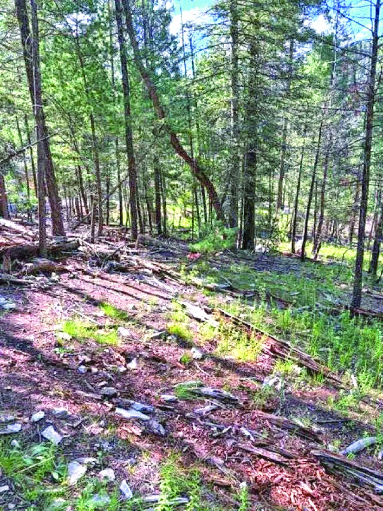

$39,900 0.565 Acre Property in James Canyon 0.565 acres James Canyon, New Mexico MLS #173270Homes for sale in James Canyon, New Mexico
1 home listed in James Canyon in the October 2026 Otero County print edition of The Real Estate Roundup.